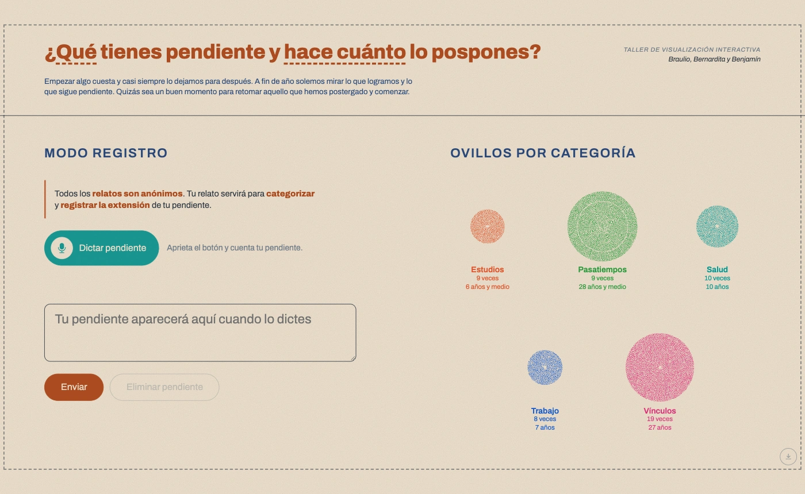

← Volver a proyectos
Telar de testimonios
Visualización de datos · Interacción por voz · Instalación · 2026¿Qué tienes pendiente y hace cuánto lo pospones?Esta web invita a responder esa pregunta por voz. Cada relato es anónimo: de él solo se extrae su temática y cuánto tiempo lleva pospuesto. Cada pendiente se convierte en un hilo del color de su temática, cuyo largo corresponde al tiempo postergado, y todos juntos se tejen en un telar que luego se enrolla en ovillos por categoría.

Agregar fotos de la instalación
Agregar el telar en vivo
Proyecto realizado en el Taller de Visualización Interactiva junto a Braulio Figueroa y Benjamín.